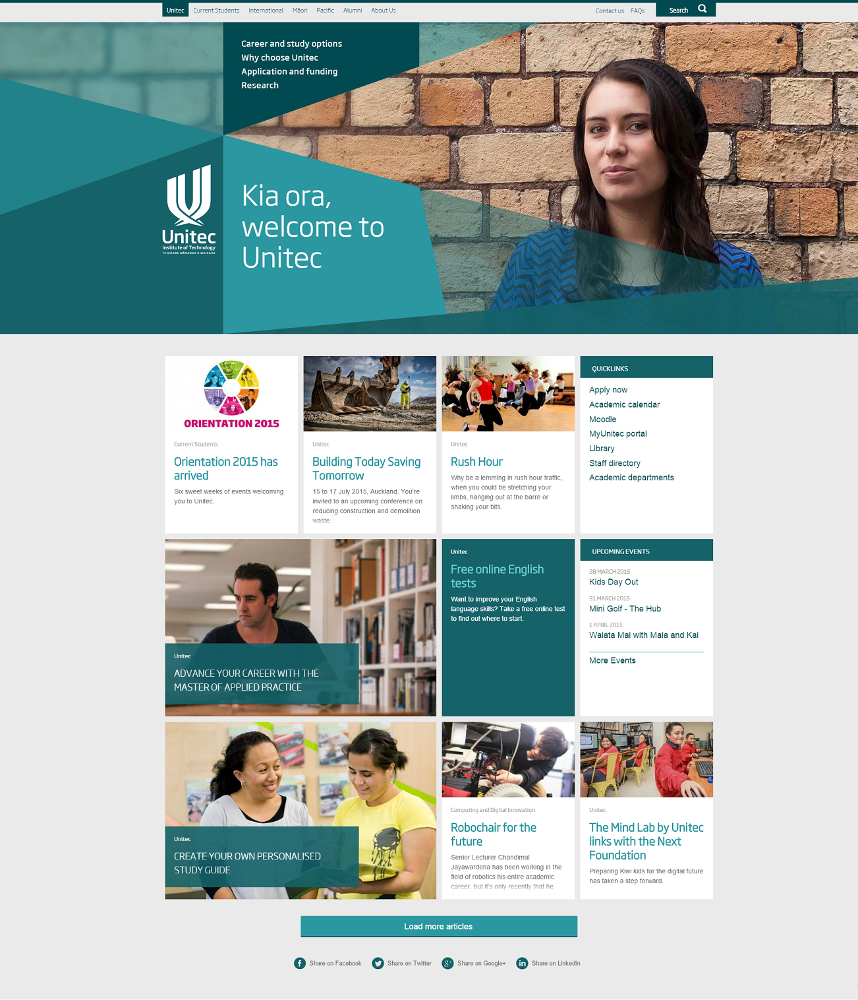
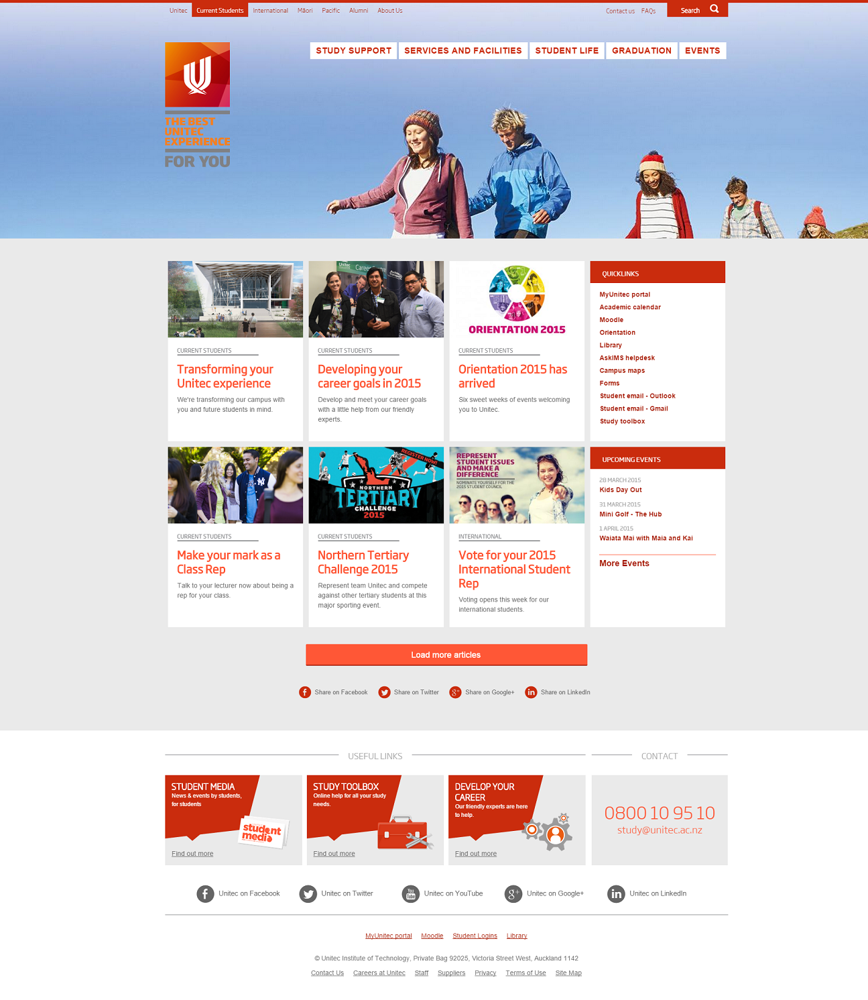
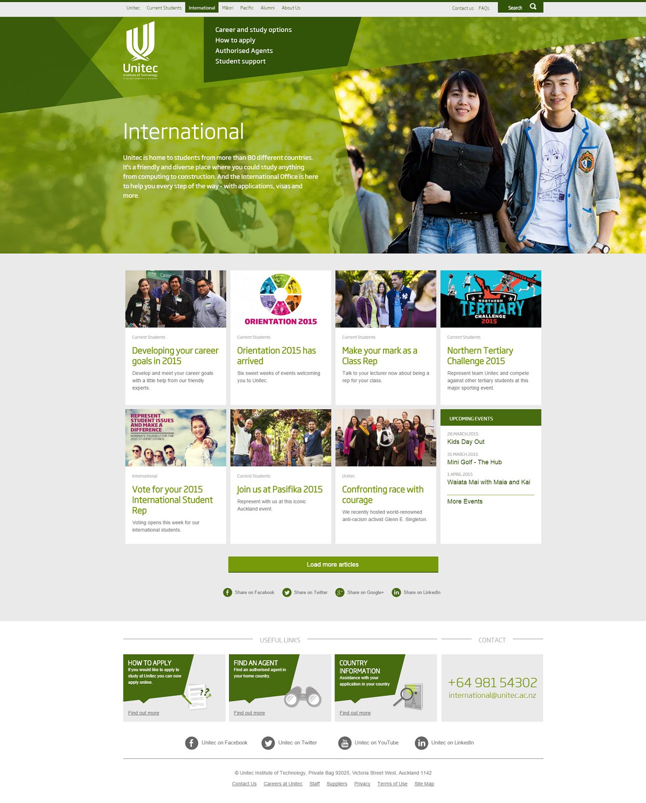
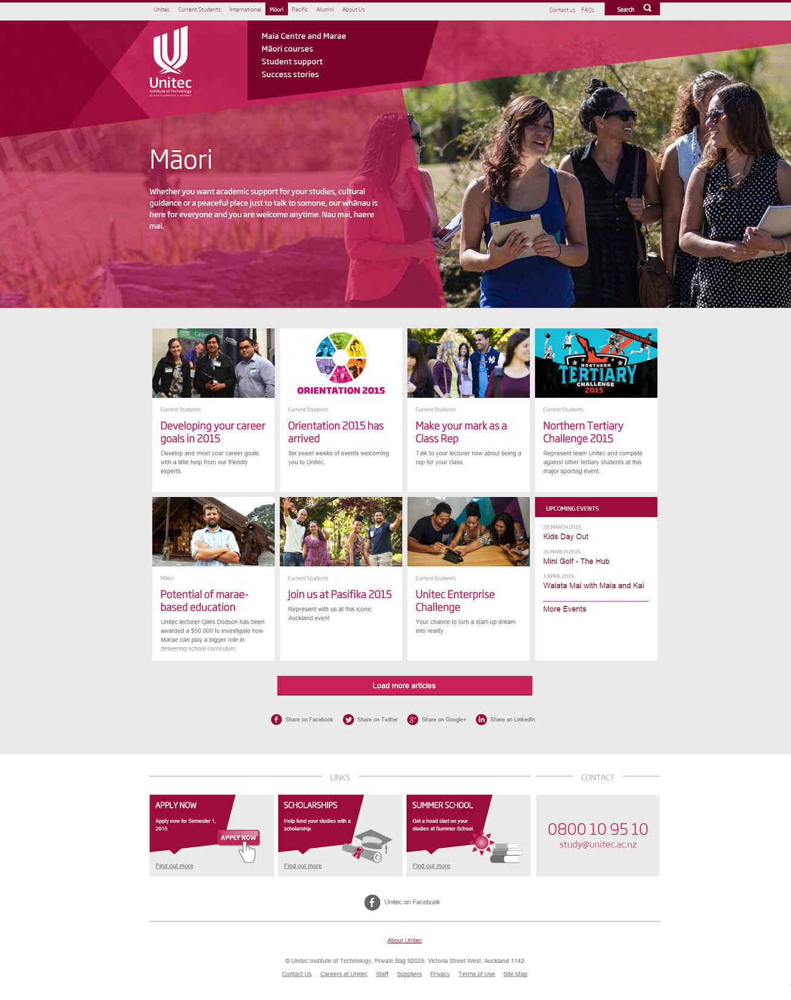
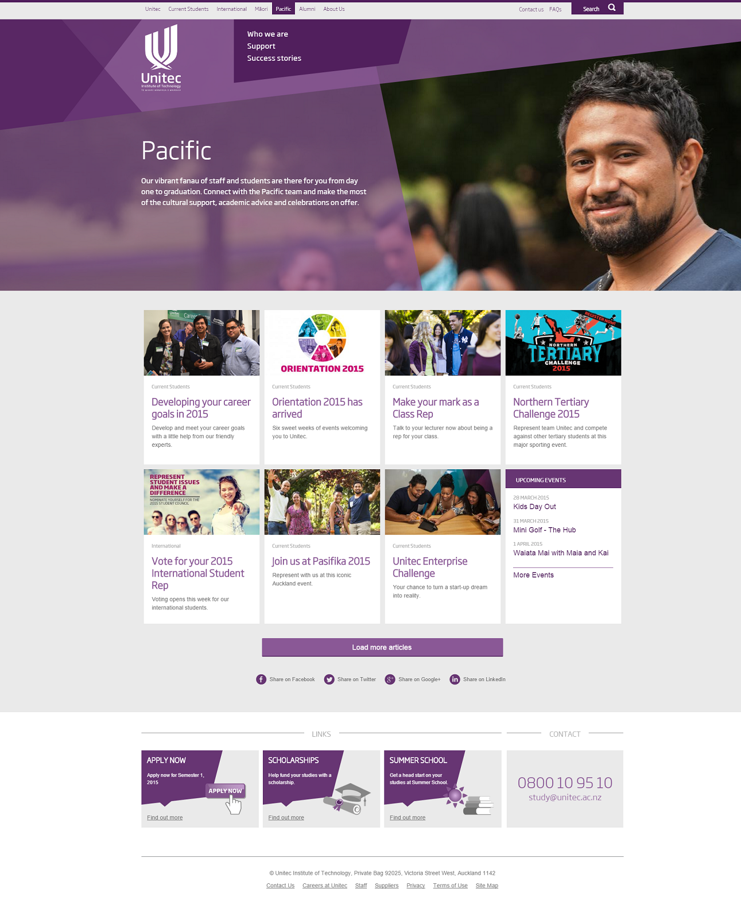
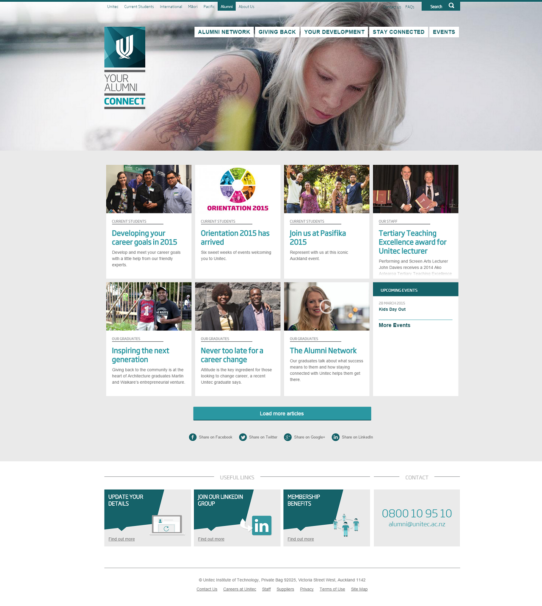
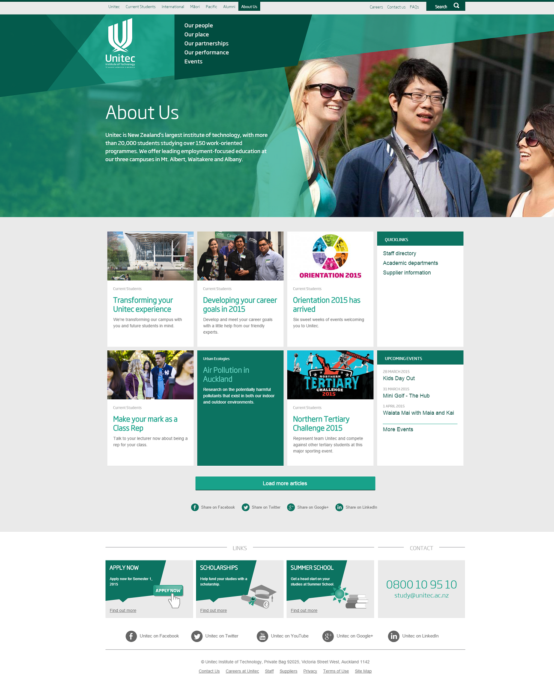
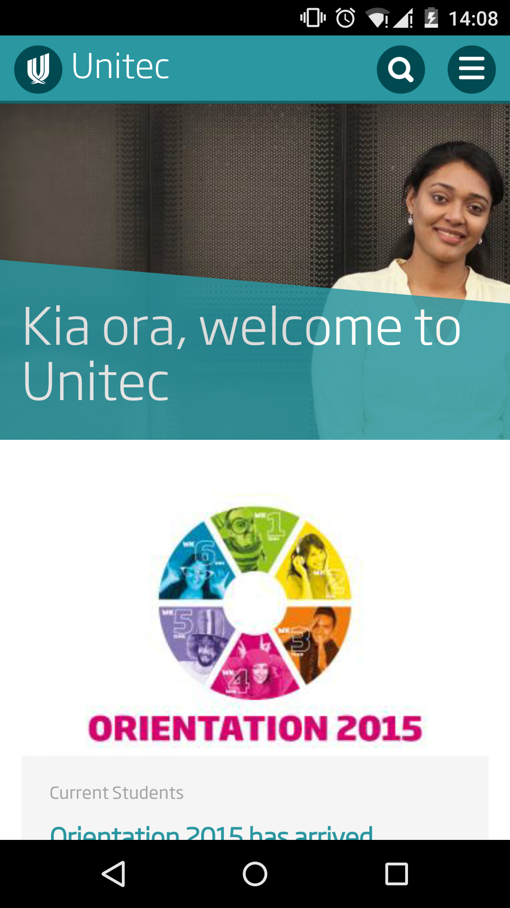
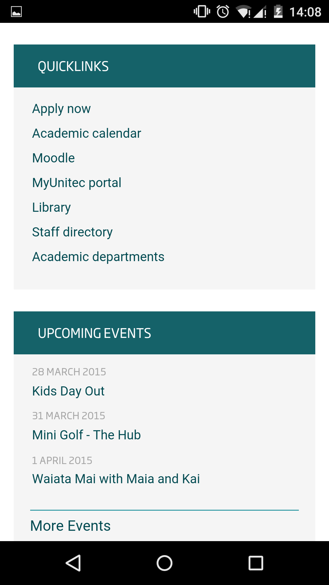

This website is a critique of the Unitec Institute of Technology Website. It is a part of the Multimedia Application Development assignment. This report contains analysis of various aspects of the website. It contains critical evaluation of various device platforms using the design principles. It also talks about the observations from the qualitative research carried by fourteen students.
Unitec Insitute of Technology is the largest institute of technology in Auckland with more than 20,000 students studying over 150 programmes. It is a collection of three campuses in Mt. Albert, Waitakere and Albany. Unitec offers degree programs in arts, business, and technical subjects at the bachelors, masters and doctoral level. Applied technology (Trade) training is offered at certificate, diploma and degree level. Unitec is a member of the International Association of Universities.
The visual design of the current Unitec website is sleek with a horizontal banner at the top. The middle section consists of box sections with information on current events, quick links and upcoming events. It's a sleek design and looks much cleaner with a white background. The font style and size is appropriate and makes it readable. The color scheme is consistent. The website seems to be center aligned. The whitespace is much less and the screen seems to be cleverly utilised. The section boxes make the website more appealing as the data seems organised and not messy. The color coding for different pages is also quite impressive. The visual desgin looks upto date to any user who visits the website for the first time. Except for one user, most agreed that the website looks upto date and abides to current standards. The theme is quite resposnive and the section boxes adjust to the screen width which is quite impressive.
The layout is fairly straightforward. It follows a more balanced look, so it's not particularly a horizontal or a vertical layout but a bit of both. The horizontal banner and the vertical sections even it out. However, the media sections seem to be random and can lead to confusion for a first time user as to finding links.
       Website that is constructed while taking into considerations of the stakeholders that will be actively participating are more likely to generate a generous amount of hits. Most importantly, the usability features plays an important role that will decide if someone who have visited a website will return or otherwise. Furthermore, users to a website can be highly proficient in computers or otherwise. Therefore it is vital that we have to cater to meet the universal usability requirement by examining the target audience. The Unitec website is divided into sections. Each link on the header menu takes the user to a different page such as International section, Pacific students section, Alumni section, etc. The site lacks a site map which makes it a bit difficult for a first time user to navigate if they don't know what they're looking for. The search bar is a useful feature. The application section is on the bottom of the page which is not convenient. The section box with quick links is handy. A frequent user will probably know how to navigate around the website and may choose the most convenient way to search for a product or service but this may confuse a new user to the website.
The search bar could be just a small box at the upper right corner instead of occupying most of the screen when clicked. The tiles in the middle of the page could have more programme related info such as fees, application, etc. The random media news seems a little confusing as it is mixed up with other important sections such as quick links. The header could have drop down menus to make it more convenient for users to explore all the available options. The website could have different sections such as media, application and fees, etc. While the pages do exist, they could be accessed easier if included in the header instead of having to browse a couple of pages to access them. The website looks good on a smartphone but the menu bar needs a bit of improvement. The page on the android version of chrome keeps scrolling back to the top.